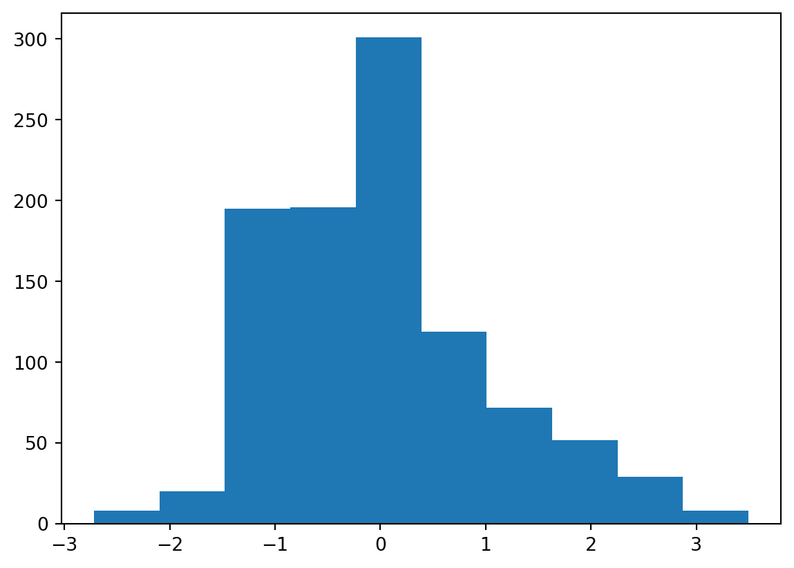
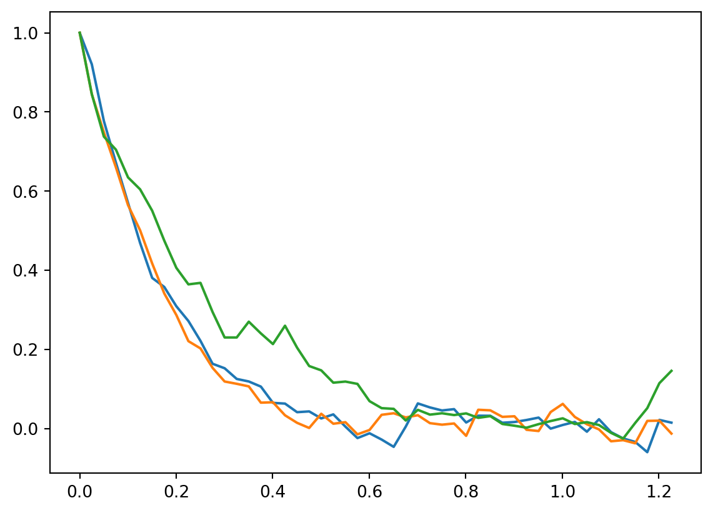

import pandas as pd
import numpy as np
import matplotlib.pyplot as pltLangevin Equation
We are going to stochastically solve the Langevin Equation.
We take the Langevin equation. There is a stochastic force in there which is Gaussian in nature.
We will (1) use Euler’s method to generate a realization but for that we first need (2) a sampled Gaussian distribution.
Consult Gerd Ropke’s text on non-equilibrium thermodynamics.
Sampling a Gaussian
Manually (Box-Fuller method)
Let’s try the Box-Fuller method.
def SampleGaussian(num = 1000):
u = np.random.rand(num)
u1 = u[:int(num/2)]
u2 = u[int(num/2):]
z0 = np.sqrt(-2*np.log(u1)) * np.cos(2 * np.pi* u1)
z1 = np.sqrt(-2*np.log(u1)) * np.sin(2 * np.pi* u2)
z = np.concatenate((z0,z1))
return zplt.hist(SampleGaussian(), bins = 10)(array([ 8., 20., 195., 196., 301., 119., 72., 52., 29., 8.]),
array([-2.71806518, -2.09685307, -1.47564096, -0.85442884, -0.23321673,
0.38799538, 1.0092075 , 1.63041961, 2.25163173, 2.87284384,
3.49405595]),
<BarContainer object of 10 artists>)
Automatic (use some library)
Numerical solution of the Langevin equation
Use the Euler method
\(v_k^{(m)} = v_{k-1}^{(m)} + h (-\gamma v_{k-1}^{(m)} + r_{k-1}^{m})\)
$M = 1000 (Number of realizations), $ $N = 24000 time steps, $ $h = 0.025, $ \(t_N - t_0 = 600 s,\) \(\gamma = 5; D = 1\)
Solve it directly
- For one realization: Create N random variables.
def eulerlangevin(vk_1, rk_1, h, gamma ):
return vk_1 + h * (-gamma * vk_1 + rk_1)def langevinrealizations(h = 0.025, samples = 100, realizations = 10, v0 = 1, gamma = 5, D = 1):
"""
Create multiple langevin realizations
Arguments:
v0 = Initial velocity
h = time step
gamma = friction
D = Diffusion
time (not passed but total simulation time = h*samples)
"""
time = np.linspace(0,h*samples, samples)
allvk = np.empty((realizations, samples))
allgaussians = np.empty((realizations, samples))
for m in range(realizations):
gaussianrv = SampleGaussian(samples)
vk = np.array([])
for i in range(len(gaussianrv)):
if i == 0:
vk = np.array([v0]) #np.append(vk, eulerlangevin(v0, gaussianrv[0], h, gamma))
else:
vk = np.append(vk, eulerlangevin(vk[i-1], gaussianrv[i-1], h, gamma))
allvk[m] = vk
allgaussians[m] = gaussianrv
return time, allvk, allgaussians
time, allvk, allgaussians = langevinrealizations(samples = 1000, h = 0.025, gamma = 5, D = 1, realizations = 10)We plot some realizations.
n = 50
plt.plot(time[:n], allvk[0][:n])
plt.plot(time[:n], allvk[1][:n])
plt.plot(time[:n], allvk[2][:n])